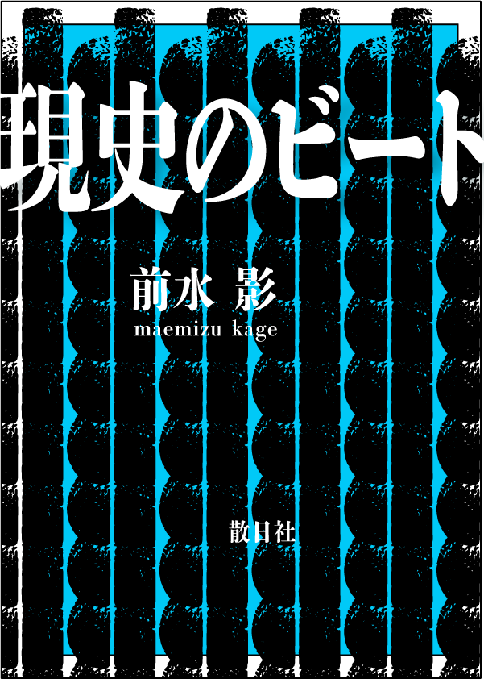

至福のペタノベル『現史のビート』
エ、新一、わしがこれほど興奮している意味が分るかね。陸軍大臣が顔色を変えたほんとうの意味が分るかね。
作者の言葉 夢を尊重せよ。われらの陸海軍は皇国三千年の夢を実現しつつあるではないか。偉大なる夢と月々火水木金々の努力、斯くして偉大なる現実は生れるのだ。夢無くして科学は無い。科学の進歩は天才の夢に負う所如何に多大であるか。科学史の毎頁がこれを証明している。現実に先行する夢なくして現実の進歩はない。今や完全なる勝利か、然らずんば国民一人残らずの死あるのみである。眼前の現実に跼蹐して、徒らに物資の不自由を喞つことをやめよ。卑小なる保身を離れて、偉大なる夢を抱け。私は一つの夢を語ろうとする。無論、昔日の悪夢を語るのではない。昔日の悪夢は悉くかなぐり捨て、私の力の許す限りに於て、大いなる正夢を語ろうとするのである。
-
書籍情報
- 📖 『現史のビート』
- 著者：前水 影
- 出版社：散日社
- 発売日：202X年X月X日
- ISBN：XXX-XXXXXXX
- 購入リンク：[ooooooooooo]